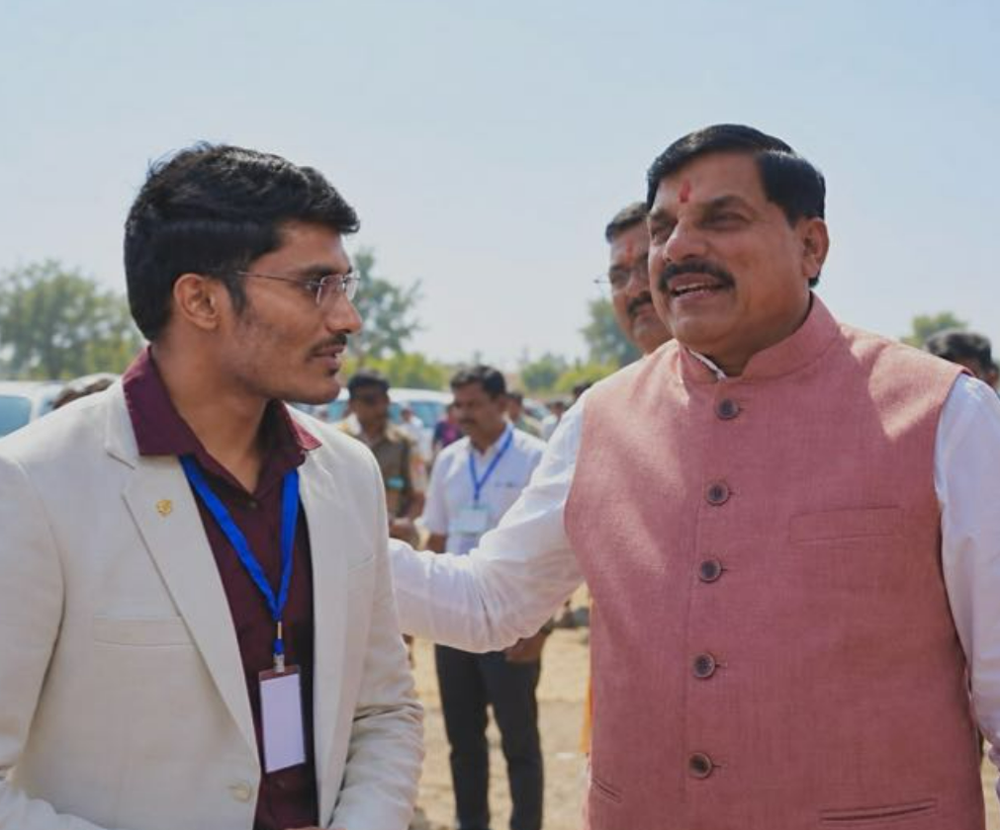

Bio-CNG & CBG Plants
Project delivery and operational coordination for compressed biogas infrastructure.
OPERATIONS · EPC · CLEAN ENERGY
Working across Bio-CNG and compressed biogas projects, renewable-energy infrastructure, industrial gas solutions and EPC project execution in India.
BIO-CNG · CBG PLANTS · BIOGAS · RENEWABLE ENERGY

01 / ABOUT
Bobby Chandel is the Chief Operating Officer at Finsen Ritter Technologies Private Limited, working across industrial gas systems and renewable-energy project delivery.
His professional work includes coordination across Bio-CNG and compressed biogas projects, site operations, procurement, technical documentation, project progress and stakeholder communication.
This website is a central professional profile for his experience, public industry contributions and educational resources on biogas and renewable-energy infrastructure.
Biography text should be reviewed for accuracy before publication. Project claims and achievements will be added only when verified.
02 / EXPERTISE
Project delivery and operational coordination for compressed biogas infrastructure.
Process and project coordination across feedstock handling, digestion, gas treatment and supporting systems.
Engineering, procurement, construction coordination and industrial gas system integration.
Site progress, vendor coordination, technical documentation and cross-functional execution.
03 / INDUSTRY KNOWLEDGE
Useful, technically reviewed resources—not keyword-only pages.
What a compressed biogas plant is, how it works and the major process sections.
Differences in composition, purification, compression, applications and quality requirements.
Overview of H₂S removal, CO₂ separation, moisture control and gas quality.
Practical project planning, site progress reporting, procurement and commissioning readiness.
Introductory guidance on organic feedstocks, anaerobic digestion and process considerations.
Industry developments and regulations, with dates and references to reliable sources.
These are planned content topics, not claims that all articles are already published. Technical articles must be checked against applicable standards and reliable sources.
PROFESSIONAL NETWORK
For professional networking and business enquiries, use the profiles and company website below.